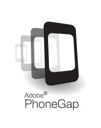
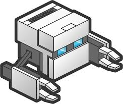
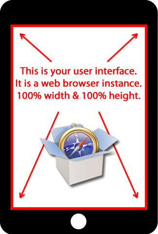

PhoneGap & PhoneGap Build
Getting Started
Julee Burdekin
@adobejulee
What is PhoneGap?

- Free and open source framework
- Create mobile apps using the web technologies
- Use standardized web APIs
- Target the platforms you care about
What is PhoneGap Build?

- A cloud-based service
- Built on top of the PhoneGap framework
- Easily build your apps in the cloud
- http://phonegap.com/app/feature/
Overview
- You create screens with HTML, CSS & JavaScript
- You use PhoneGap to make it an app
- You use PhoneGap API to add device features
- You use PhoneGap Build to build & update it
- Your app displays in 100% of the screen
- It's like a headless browser
Overview
Getting Started
- 1. Design with mobile in mind
- 2. Download & install PhoneGap & the Cordova XPlat CLI
- 3. Install device-specific apps & SDKs
- 4. Get any dev certs and/or app keys
- 5. Add PhoneGap API
- 6. Build the app
- 7. Test in emulators & devices you have
1. Design with mobile in mind
- Use templates & guidelines
- Start with sizes that work on your smallest fav device
- Use media queries to increase sizes
2. Download & install PhoneGap & the Cordova XPlat CLI
3. Install device-specific apps & SDKs
- Install Android
- Install iOS
- Install others
- Pay attention to variations in instrux
For example: Android
- Instrux differ from Android
- (But it's a bit easier)
- Eclipse is an IDE -- you can use your own
- Install Eclipse & Adroid Dev Tools (ADT)
- Install packages for devices you want to target
Example, continued
Install plugins for APIs you want to use
for example:
cordova platform add ios
cordova platform add android
cordova plugin add org.apache.cordova.device
cordova plugin add org.apache.cordova.console
cordova plugin add org.apache.cordova.camera
And emulators
sudo npm install -g ios-sim
cordova emulate ios
4. Get any dev certs and/or app keys
For example, Apple Dev Cert & Provisioning
- Scan docs on App Distribution
- Pay Apple $99 for the iOS Dev Program
For example, Apple Cert & Provisioning Cont'd
- Get your dev certificate
- Use Keychain Access to generate a key pair locally
- Download & double-click to store in Keychain Access.
- Save both *.cer file & CertificateSigningRequest.certSigningRequest somewhere secure.
- Go to Keypair Access, select the private key associated with the Cert & export as a *.p12 file, with a password.
For example, Apple Cert & Provisioning Cont'd
- Get provisioned
- Download and double click the following file to install your Provisioning Profile,
- It's in User/Library/MobileDevice/Provisioning Profiles
- Adding your Apple ID to Xcode
- Get your Bundle ID
5. Add PhoneGap API
- Create an app with Cordova CLI
- Fold in your code
- Test for styles
6. Build
- Before you build (props to Steve & Ray):
window.onerror = function(msg,url,line){
console.log('window.onerror :',msg,url,line);
}
7. Test
- In emulators
- On real devices
Some help